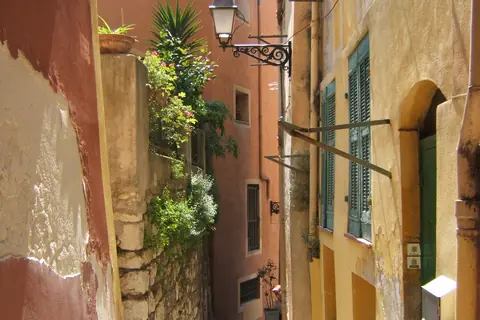

{kind=link}

Colline du Château (성채 언덕)
구시가지와 항구 사이에 92m 높이로 솟은 공원 전망대다.
| 운영시간 | 화–일 꽃·식품 오전 시장 · 월요일 골동품시장 07:00–18:00 |
|---|---|
| 휴무 | 연중무휴이나 월요일은 성격이 바뀐다 — 꽃·청과 시장은 화~일요일이고, 월요일에는 약 180개 상인의 골동품(브로캉트) 시장으로 전환된다 (07:00~18:00) |
| 예약 | 예약 불필요 — 개방형 노천시장 |
| 소요시간 | 45–60분 재확인 |
운영 화–일 꽃·식품 오전 시장 · 월요일 골동품시장 07:00–18:00 · 휴관 연중무휴이나 월요일은 성격이 바뀐다 — 꽃·청과 시장은 화~일요일이고, 월요일에는 약 180개 상인의 골동품(브로캉트) 시장으로 전환된다 (07:00~18:00) 예약 예약 불필요 — 개방형 노천시장 · 소요 45–60분 (재확인)
구시가지 진입로에 늘어선 니스의 대표 시장 광장이다. - 왜 가는가: 남프랑스의 제철 과일, 올리브, 치즈와 꽃들이 늘어서 있어 오감으로 니스 요리의 원재료를 만나는 곳이다. - 최적 방문: 체류 45–60분 | 오전 09:30 - 10:30 (시장이 가장 활기차고 식재료가 풍성한 시각). - 놓치지 말 것: 화덕에서 갓 구워낸 소카(Socca)를 즉석에서 손으로 찢어 먹는 맛을 놓치지 말 것. 월요일(9/7)은 꽃시장 대신 골동품·벼룩시장으로 바뀐다 — 정상 시장은 화요일(9/8) 아침이 적기다.
구시가지와 항구 사이에 92m 높이로 솟은 공원 전망대다.

지중해로 60m 솟아오른 거대한 바위 절벽 위에 조성된 모나코 대공국의 심장부다.

11세기 요새가 세워지며 칸의 역사가 시작된 언덕 마을이다.

칸(Cannes)의 1934년에 세워진 철골 지붕 재래시장이다.

니스 제네랄 드골 광장에 서는 넓고 쾌적한 니스 현지인들의 생활형 시장이다.

추천 대상: 니스의 활기찬 아침 시장과 유서 깊은 구시가지 골목을 지나 성채 언덕의 지중해 파노라마 조망까지 한 번에 완료하고 싶은 여행자.